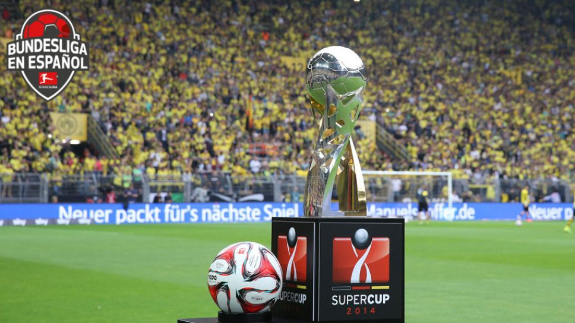

SUPERCOPA ALEMANA

La Supercopa de Alemania, es la copa la cual la disputan el ganador de la Bundeliga y la Copa de Alemania.
RANKING DE MAXIMOS GANADORES
| EQUIPO | COPAS |
|---|---|
| Bayern Munich | 10 |
| B. Dortmund | 6 |
| Werder Breme | 3 |
| Kaiserslautern | 1 |
| Schalke 04 | 1 |
| Stuttgart | 1 |
| Wolfsburgo | 1 |
TODOS LOS GANADORES
| AÑO | EQUIPO |
|---|---|
| 2022 | Bayern Munich (10) |
| 2021 | Bayern Munich (9) |
| 2020 | Bayern Munich (8) |
| 2019 | B. Dortmund (6) |
| 2018 | Bayern Munich (7) |
| 2017 | Bayern Munich (6) |
| 2016 | Bayern Munich (5) |
| 2015 | Wolfsburgo (1) |
| 2014 | B. Dortmund (5) |
| 2013 | B. Dortmund (4) |
| 2012 | Bayern Munich (4) |
| 2011 | Schalke 04 (1) |
| 2010 | Bayern Munich (3) |
| 1996 | B. Dortmund (3) |
| 1995 | B. Dortmund (2) |
| 1994 | Werder Bremen (3) |
| 1993 | Werder Bremen (2) |
| 1992 | Stuttgart (1) |
| 1991 | Kaiserslautern (1) |
| 1990 | Bayern Munich (2) |
| 1989 | B. Dortmund (1) |
| 1988 | Werder Bremen (1) |
| 1987 | Bayern Munich (1) |